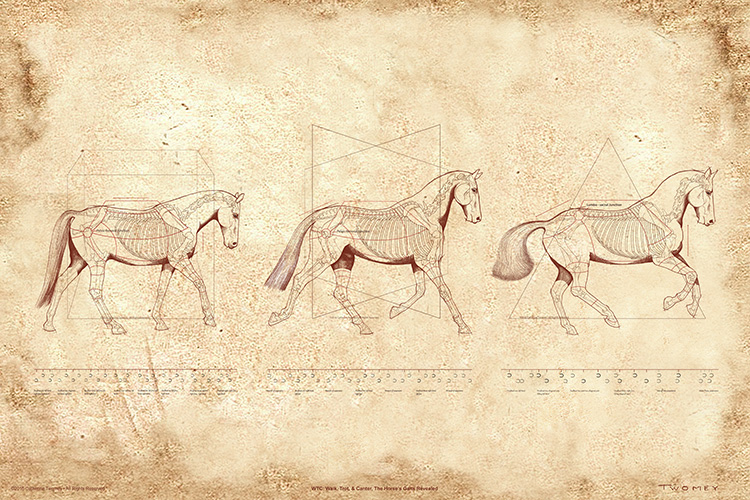

Leonardo da Vinci – História veľkého génia
Leonardo da Vinci (1452–1519) bol jednou z najvýznamnejších osobností renesancie a v histórii ľudstva zanechal nezmazateľnú stopu. Narodil sa 15. apríla 1452 v dedinke Vinci neďaleko Florencie ako nemanželský syn notára a roľníčky. Napriek tomu, že nemal formálne vzdelanie, už v mladosti prejavil mimoriadny talent v kreslení, čo ho priviedlo do dielne slávneho florentského umelca Andrea del Verrocchia, kde začal svoju kariéru ako maliar a učenec.
Maliarstvo a umelecké úspechy
Leonardo sa preslávil najmä ako maliar, pričom jeho diela sú dodnes považované za vrcholy renesančného umenia. Medzi jeho najznámejšie obrazy patria:
-
Mona Lisa – jeden z najznámejších a najslávnejších obrazov na svete, ktorý je cenený pre svoju záhadnú tvár a dokonalú techniku.
Posledná večera – veľkolepá nástenná maľba v kláštore Santa Maria delle Grazie v Miláne, ktorá zachytáva emocionálny moment z Biblie.
Jeho umenie bolo charakterizované inovatívnou technikou, dokonalým využitím svetla a tieňa (tzv. sfumato) a hlbokým záujmom o ľudskú anatómiu, ktorú študoval s cieľom zlepšiť svoje zobrazenie ľudského tela.

Veda a inžinierstvo
Okrem maliarstva sa Leonardo da Vinci zaujímal aj o vedu a inžinierstvo. V jeho poznámkach sú nákresy a opisy rôznych vynálezov, vrátane letúňov, vojenských strojov a hydraulických zariadení. Jeho zvedavosť ho viedla k experimentovaniu s mechanikou a prírodnými vedami, čo ho robilo jedným z prvých moderných vedcov.
Anatomické štúdie
Leonardo venoval veľa času štúdiu ľudskej anatómie. Vykonal mnohé pitvy, aby pochopil štruktúru tela a fungovanie orgánov. Jeho presné anatomické kresby sú považované za revolučné a predbiehali svoju dobu. Tieto štúdie mu umožnili preniknúť do hlbokého porozumenia pohybu a proporcií, čo sa odrazilo aj v jeho maliarskych technikách.
Osobný život a vzťahy
Leonardo mal zložitý osobný život a jeho vzťahy s inými umelcami a osobnosťami doby boli často problematické. Hovorí sa, že mal mnohé záujmy a široký okruh priateľov, ale taktiež bol známy svojou osamelosťou a tajomnosťou.
Posledné roky
Leonardo da Vinci strávil posledné roky svojho života vo Francúzsku, kde sa stal súčasťou kráľovského dvora. Zomrel 2. mája 1519 v Amboise. Jeho odkaz žije ďalej a jeho dielo naďalej inšpiruje umelcov, vedcov a mysliteľov po celom svete.